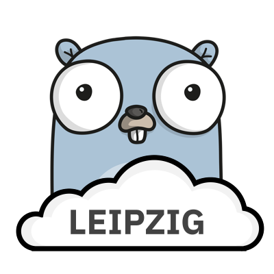

We’re starting a Golang and Cloud Native Meetup in Leipzig. The first event took place at Basislager Leipzig, Friday, 8th of February 2019, 19:00 - we had an interesting mix of people, novice to experienced users of Go, various polyglot developers, cluster admins and devops people. A list of themes discussed at the event is currently being processed in preparation for the next meetup, scheduled for March 2019. See you there!
Our goal is to establish a place, where people from all backgrounds interested in the Go programming language and various cloud technologies can meet, learn, share experiences, present, discuss and network.
Initial organizers are miku, klingtnet, panzerdev and dataduke, and we are inviting everyone to contribute or participate.

How to participate
- follow us on meetup for updates
- help us spread the word - we’re on twitter
- tell us about topics that you’d like to see covered in this context
- propose a short talk or demo (5-30 min) about some Go (language, framework, project, problem, …) or Cloud Native (containers, orchestration, platforms, networking, storage, security, …) related topic - we’ll like to create a roadmap for the next few events and we would love to see people bring their ideas and projects (send us a PM on twitter, via email)
- join us organizing this (just drop me an email; we have a few nice ideas for events already, but help is always appreciated